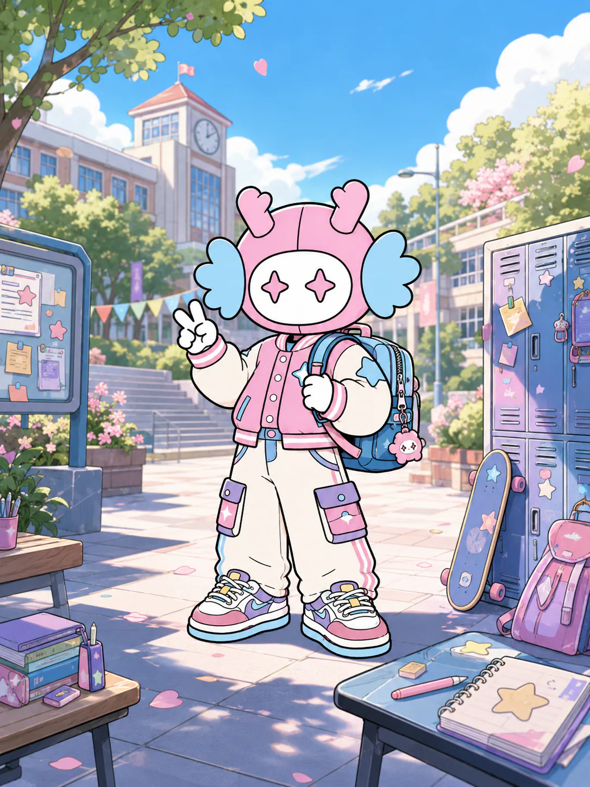
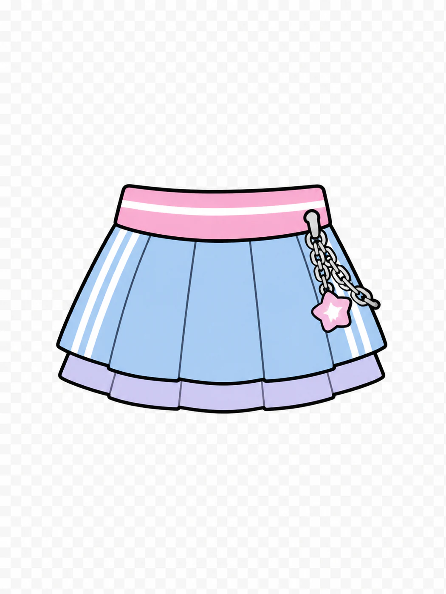
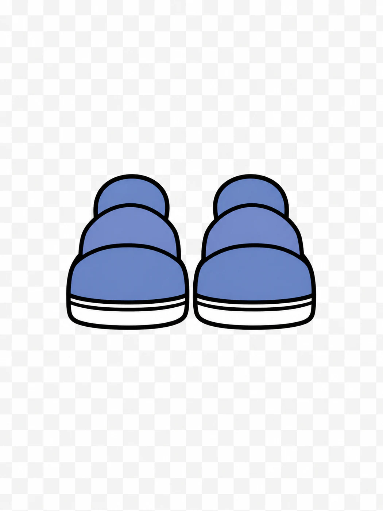
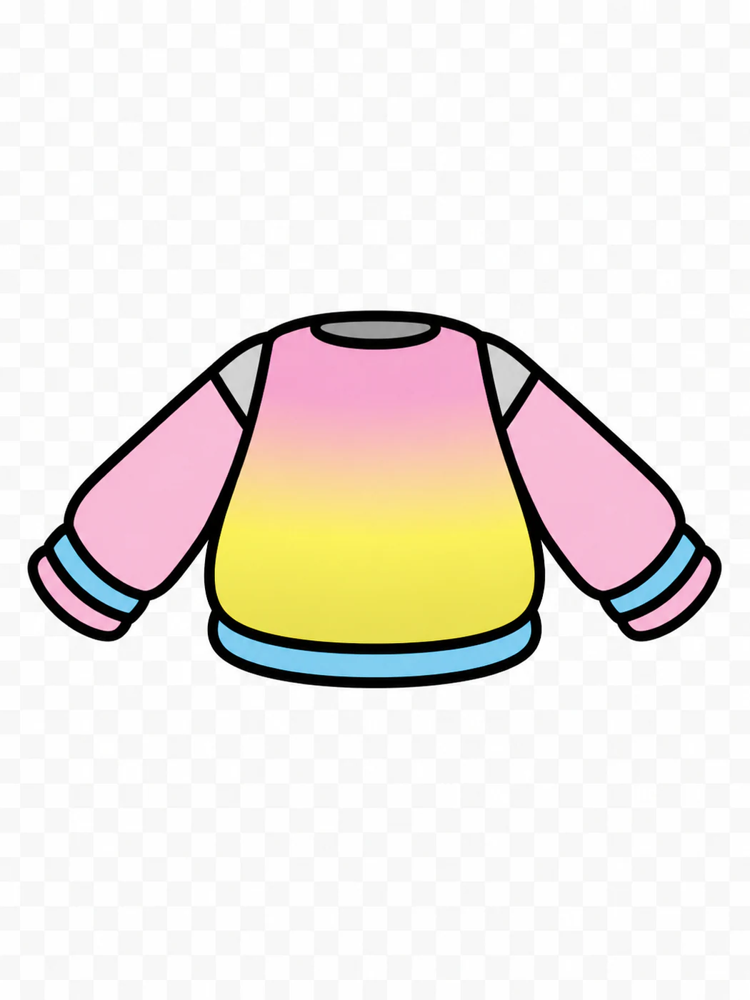
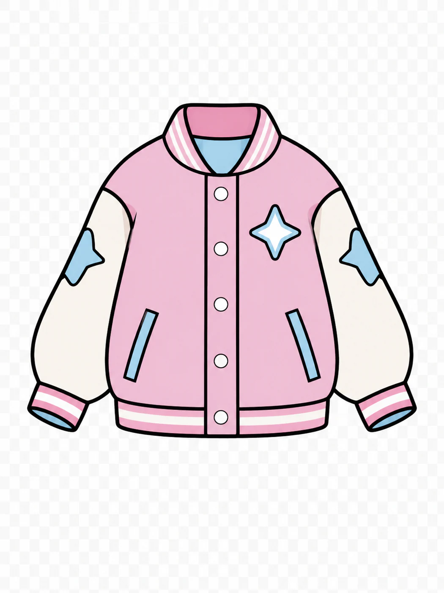
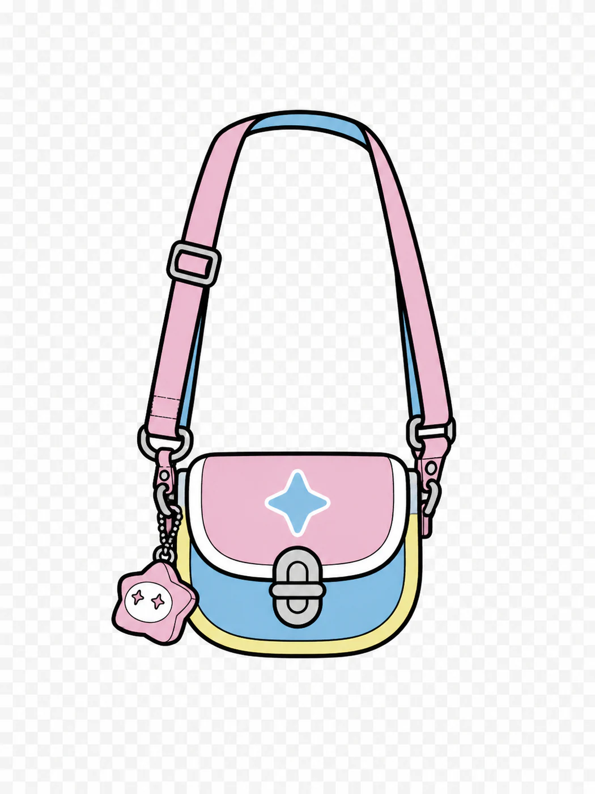
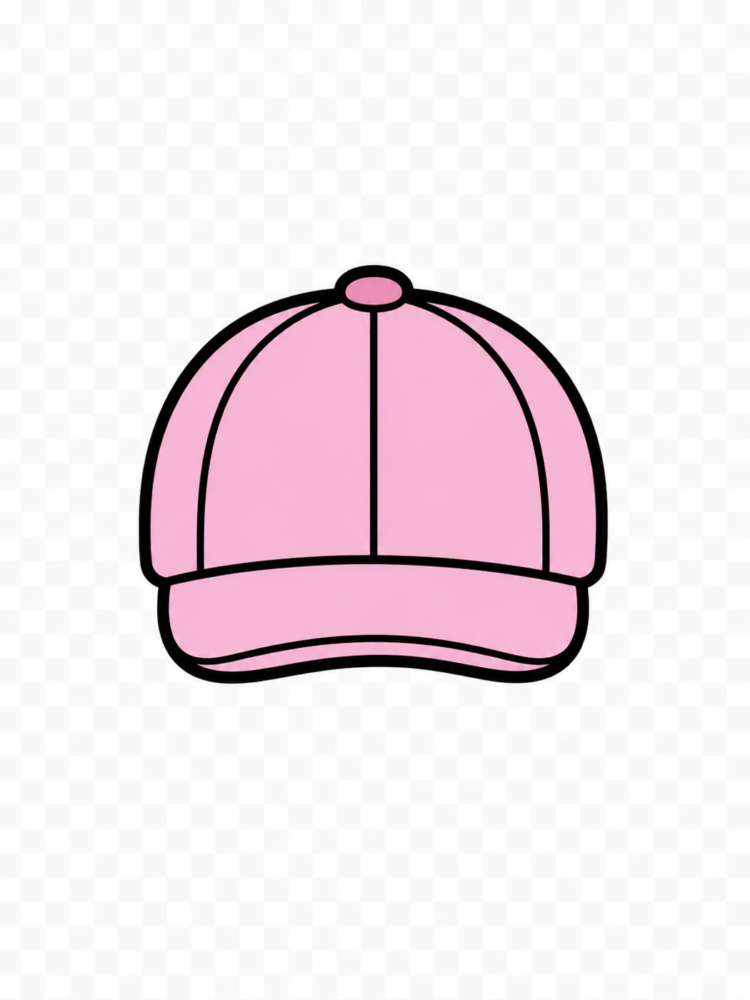
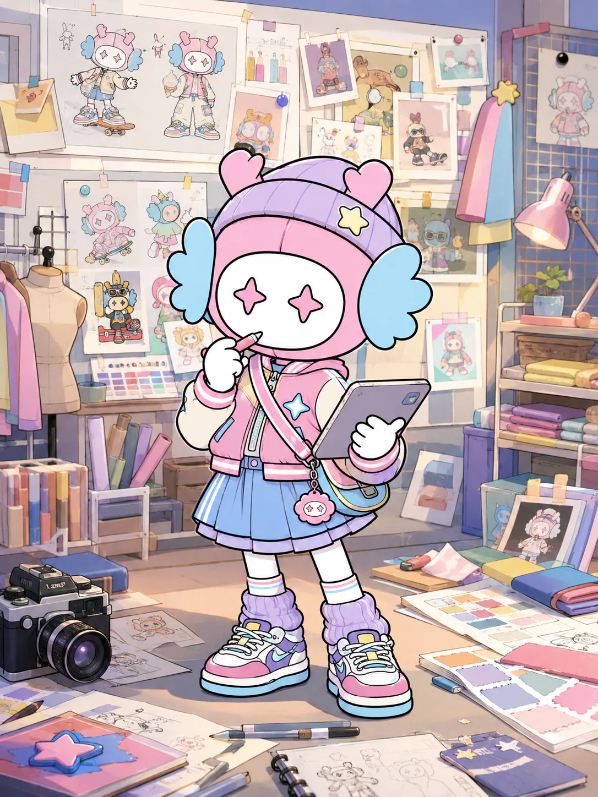
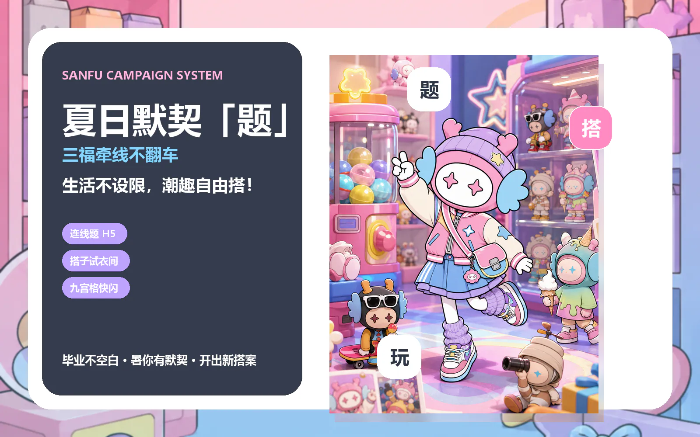

01 · 选一道生活题
今天，想和谁去哪里？
不用先想穿什么。选一个真实场景，小福龙会直接给出一套能出门、能出片的答案。
SMART OUTFIT
这一题，小福龙先替你打个样
系统识别到「开学装备局」，并结合厦门今日天气、开学季与模拟库存，优先推荐彩虹撞色卫衣 + 粉蓝星星棒球夹克 + 蓝粉运动百褶裙 + 圆头蓝色运动鞋。





开学校园 · 开学装备局
Dazi Score
综合搭子分
0
上衣
彩虹撞色卫衣
命中卫衣、元气、校园，适合开学装备局。
外套
粉蓝星星棒球夹克
命中棒球夹克、校园、开学，适合开学装备局。
下装
蓝粉运动百褶裙
命中运动、校园、青春，适合开学装备局。
鞋子
圆头蓝色运动鞋
命中运动鞋、校园、实用，适合开学装备局。
包包
星扣锁斜挎包
该类别素材较少，优先复用潮流分较高的星扣锁斜挎包。

帽子
粉色棒球帽
命中校园、青春，适合开学装备局。
眼镜
星星派对墨镜
该类别素材较少，优先复用潮流分较高的星星派对墨镜。
道具
粉蓝耳机道具
该类别素材较少，优先复用潮流分较高的粉蓝耳机道具。
当前场景为开学校园，系统结合天气、库存与校园、开学、元气标签，优先推荐彩虹撞色卫衣、粉蓝星星棒球夹克、蓝粉运动百褶裙、圆头蓝色运动鞋等装备，形成适合「开学装备局」的生活搭案。
Wardrobe Lab
换装实验室
开学装备局 · 71 分
Poster Maker
一键生成搭子海报
把场景、穿搭、分数和推荐语压成一张竖版传播物料，让互动结果变成可转发内容。
开学校园
综合搭子分
71
当前场景为开学校园，系统结合天气、库存与校园、开学、元气标签，优先推荐彩虹撞色卫衣、粉蓝星星棒球夹克、蓝粉运动百褶裙、圆头蓝色运动鞋等装备，形成适合「开学装备局」的生活搭案。
发现生活新可能

BEHIND THE MAGIC
不是随机换装，是动态生活搭案
同一个场景，也会因为天气、库存和活动节点得到不同答案。
看天气
温度和降雨改变实用权重
看库存
优先推荐当下可买单品
懂场景
生活任务决定风格组合
会生成
一键输出大片与到店清单

CAMPAIGN LOOP
从一次搭配，走到一次到店
小福龙不是只负责可爱，而是把用户的生活题，翻译成商品组合、分享内容和门店行动。